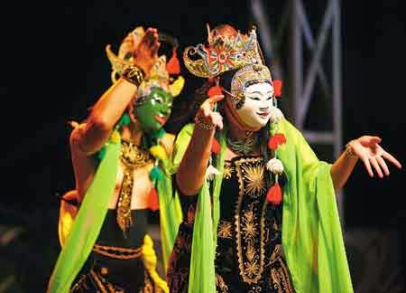
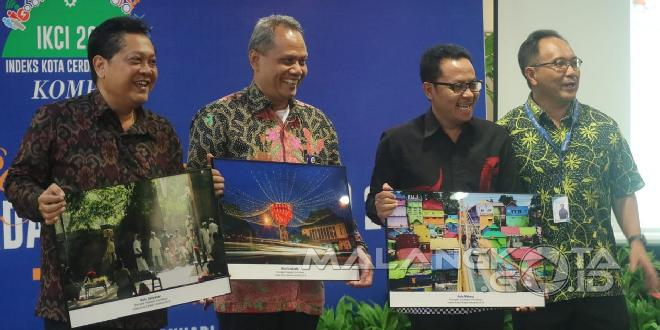

MALANG
Malang adalah sebuah kota yang terletak di Provinsi Jawa Timur, Indonesia, kota terbesar kedua di Jawa Timur setelah Surabaya. Kota ini didirikan pada masa Kerajaan Kanjuruhan yang terletak di tengah-tengah Kabupaten Malang. Kota Malang dicap sebagai kota pendidikan. Selain itu, kota ini merupakan kota pariwisata karena alamnya yang menawan dikelilingi oleh pegunungan serta udaranya yang sejuk. Malang pun terkenal sebagai kota bunga karena banyaknya bunga yang menghiasi kota. Kota Malang juga merupakan kota seni karena banyaknya kesenian khas dari kota ini, mulai dari tarian hingga pertujukan.
KESENIAN & KEBUDAYAAN MALANG
Kekayaan etnis dan budaya yang dimiliki Kota Malang berpengaruh terhadap kesenian tradisional yang ada. Salah satunya yang terkenal adalah Wayang Topeng Malangan (Topeng Malang), namun kini semakin terkikis oleh kesenian modern. Gaya kesenian ini adalah wujud pertemuan tiga budaya (Jawa Tengahan, Madura, dan Tengger). Hal tersebut terjadi karena Malang memiliki tiga sub-kultur, yaitu sub-kultur budaya Jawa Tengahan yang hidup di lereng gunung Kawi, sub-kultur Madura di lereng gunung Arjuna, dan sub-kultur Tengger sisa budaya Majapahit di lereng gunung Bromo-Semeru. Etnik masyarakat Malang terkenal religius, dinamis, suka bekerja keras, lugas dan bangga dengan identitasnya sebagai Arek Malang (AREMA) serta menjunjung tinggi kebersamaan dan setia kepada Malang.
Kota Malang Raih Penghargaan IKCI 2018
Kamis, 10 Januari 2019 5:00 WIB
IKCI adalah kota yang dinilai berhasil menerapkan konsep Kota Cerdas atau Smart City. Total ada 93 kota di Indonesia yang dinilai dengan serangkaian tolak ukur dimensi dan metode.